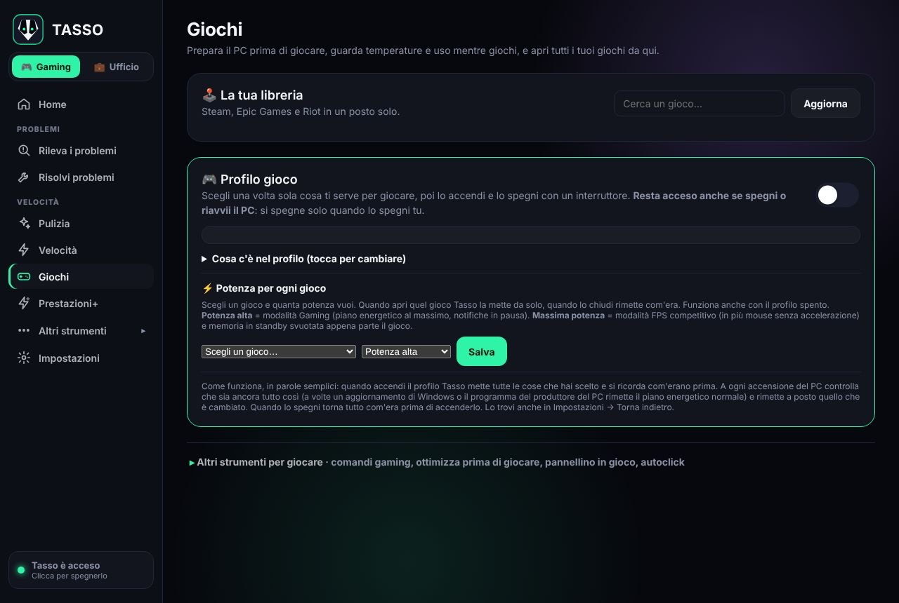
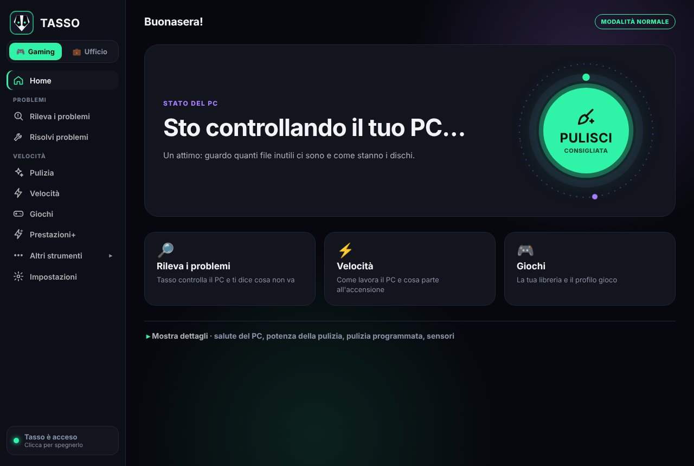
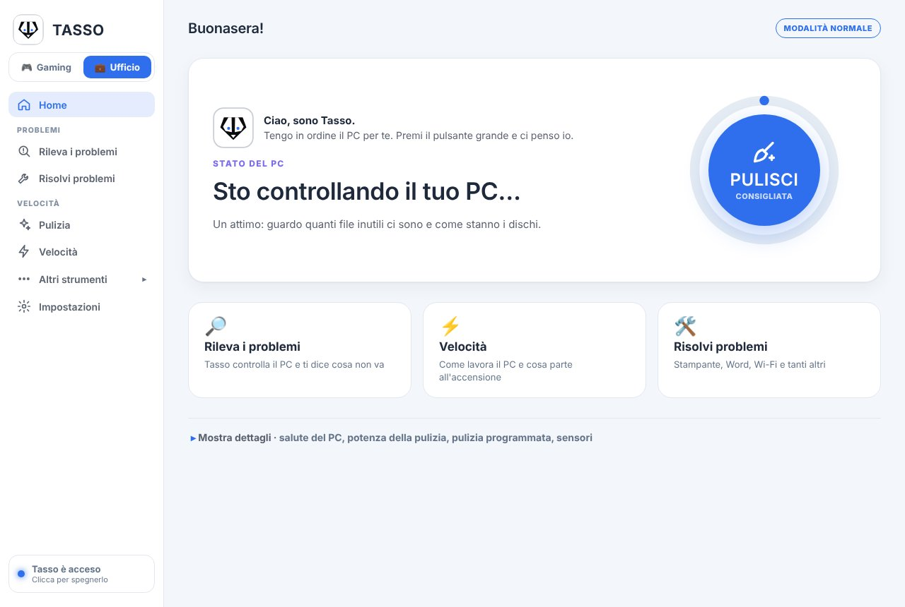
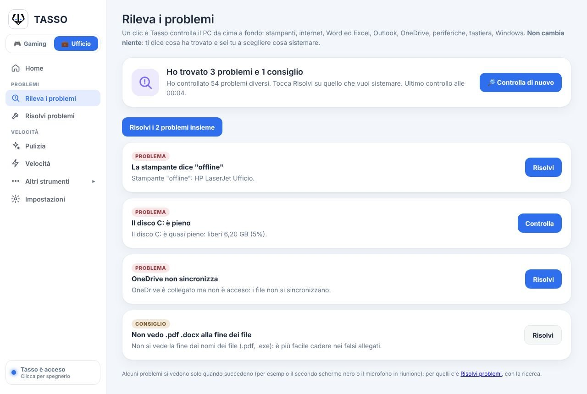
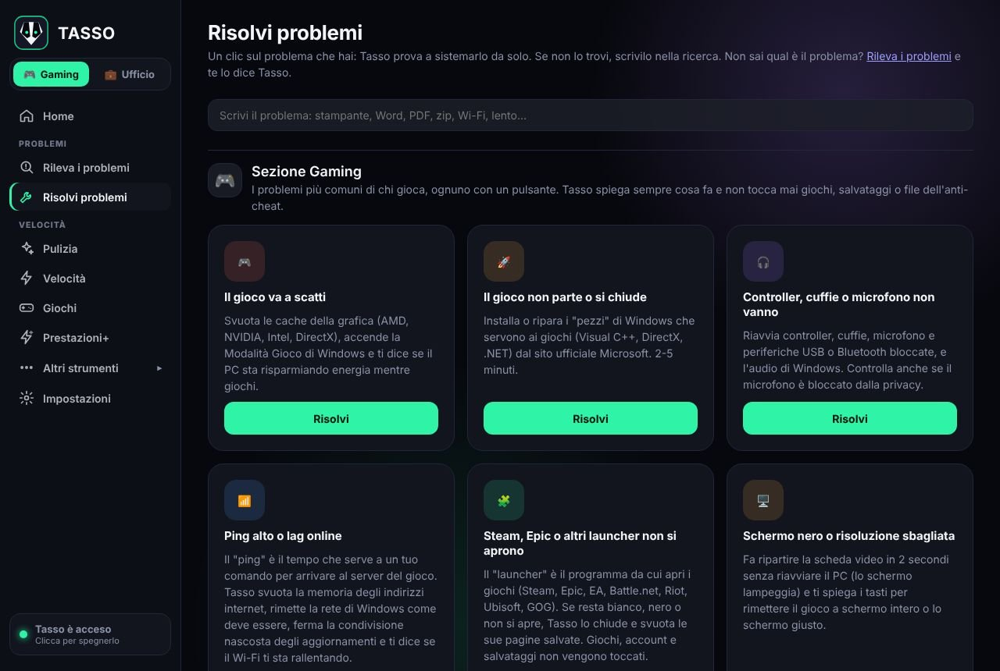
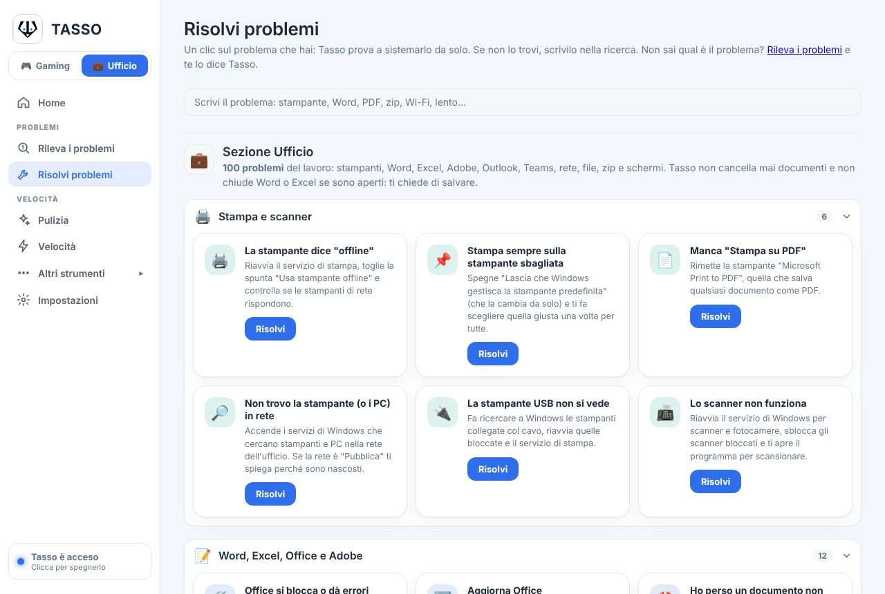
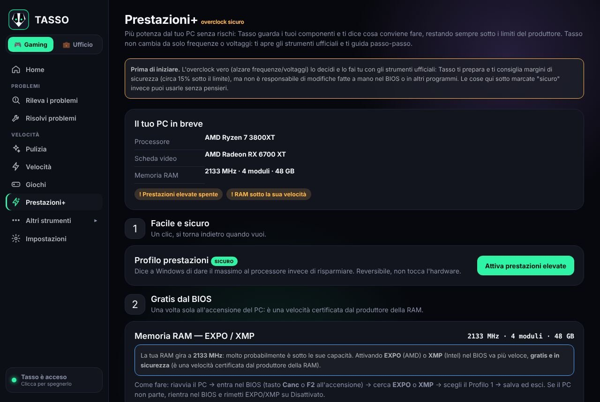
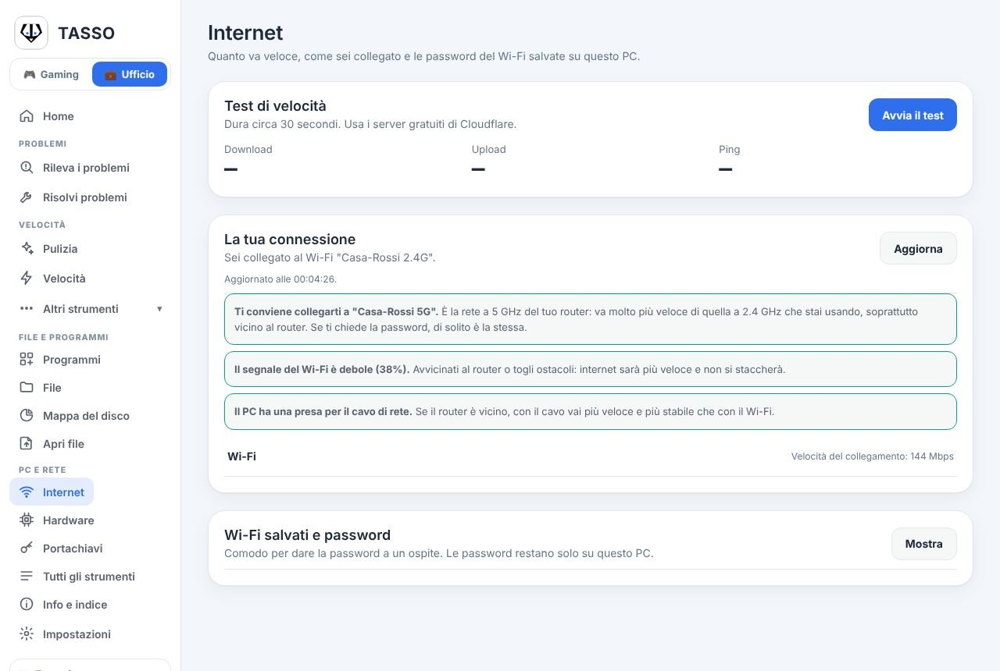

Gaming · Il PC pronto
Più FPS, meno pensieri.
Mentre giochi Windows pensa ad altro: aggiornamenti, programmi in background, piani energetici che risparmiano. Tasso li mette da parte finché giochi e poi rimette tutto com'era.

Per chi gioca e vuole il PC pronto prima della partita.
Per chi lavora e vuole un PC che non si blocca.

Per chi gioca e vuole il PC pronto prima della partita.
Per chi lavora e vuole un PC che non si blocca.

Pulisce, ripara e prepara il PC per giocare o per lavorare. Un solo file, e fa solo quello che dice.
Ogni volta che il PC rallentava cercavo un programma che lo sistemasse. Ne ho provati tanti: grafici pieni di numeri, promesse di "PC due volte più veloce", e alla fine il computer era uguale a prima.
Così ho fatto Tasso. Non inventa niente e non aggiunge cose finte. Prende il PC che hai già e lo porta al massimo di quello che può dare: pulito, sistemato, senza niente che lo frena.
Sergio Tassoni, autore di Tasso
Se il tuo PC ha un motore da corsa, Tasso lo fa andare come un'auto da corsa. Toglie quello che lo frena.
Se ha un motore da utilitaria, resta un'utilitaria. Tasso la fa diventare la migliore utilitaria che può essere. Nessuno può fare di più, e chi te lo promette ti sta mentendo.
Mentre giochi Windows pensa ad altro: aggiornamenti, programmi in background, piani energetici che risparmiano. Tasso li mette da parte finché giochi e poi rimette tutto com'era.

Massima potenza mette anche il mouse senza accelerazione e svuota la memoria in standby appena parte il gioco.
Alcuni problemi si vedono solo quando succedono, come il secondo schermo nero o il microfono in riunione. Per quelli c'è la ricerca.
Un clic e Tasso controlla il PC da cima a fondo. Non cambia niente da solo: ti dice cosa ha trovato, con parole normali, e sei tu a scegliere cosa sistemare.

I problemi più comuni di chi gioca, ognuno con il suo pulsante. Tasso spiega sempre cosa fa prima di farlo.

Tasso non tocca mai giochi, account, salvataggi o file dell'anti-cheat.
Tasso non cancella mai documenti e non chiude programmi con lavoro non salvato.
Clicca sul problema che hai e Tasso prova a sistemarlo da solo. Se non lo trovi, scrivilo nella ricerca con parole tue.

Tasso guarda i tuoi componenti e ti dice cosa conviene fare, restando sempre sotto i limiti del produttore. Non cambia da solo frequenze o voltaggi.

Se il PC ha già dato tutto, Tasso te lo dice. Niente numeri inventati.
Tasso è un solo file: niente installazione, niente programmi aggiunti di nascosto.
Quanto va veloce, come sei collegato e cosa conviene cambiare, spiegato come lo spiegherebbe un amico che se ne intende.


Un solo file, niente installazione. Si aggiorna con un clic.
Scarica per WindowsTasso cresce con quello che mi scrivete. Le idee migliori finiscono nelle prossime versioni, e lo dico quando succede.
tasso.services@proton.me
No. Lo scarichi, lo apri e lo usi. Niente account da creare.
Tasso non cancella mai i tuoi documenti e prima di cambiare un'impostazione si ricorda com'era. Per tornare indietro c'è Impostazioni, Torna indietro.
Sì, se hai Windows 10 o Windows 11 a 64 bit. Va bene su PC da gioco, portatili e computer da ufficio.
Quella che somiglia di più a come usi il PC. Cambi quando vuoi con l'interruttore in alto a sinistra, senza perdere niente.
Quando esce una versione nuova Tasso te lo dice. Premi Aggiorna e fa tutto da solo, controllando che il file sia quello giusto.
Scrivi una email a tasso.services@proton.me. Leggo tutto.
Recensioni vere, mandate da dentro Tasso con Scrivici da chi ha detto sì a pubblicarle.